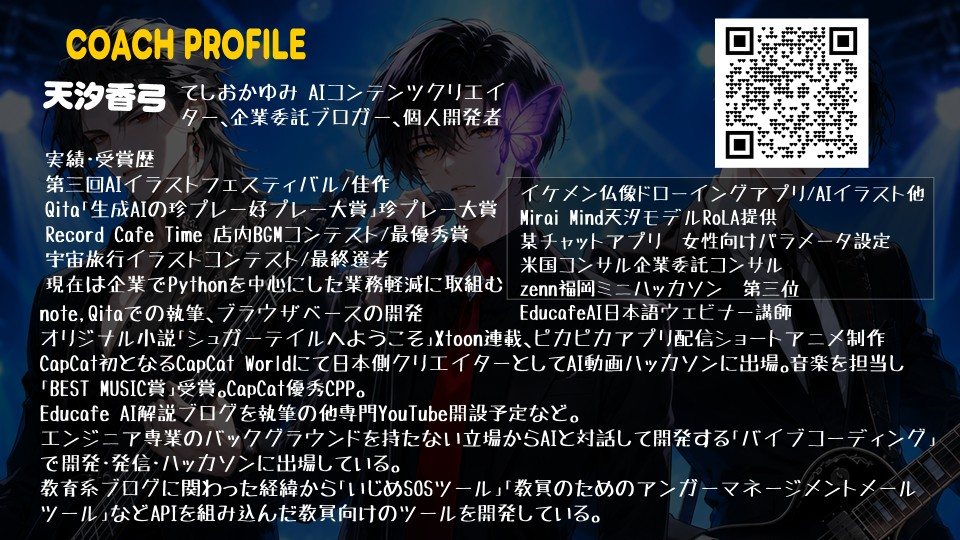
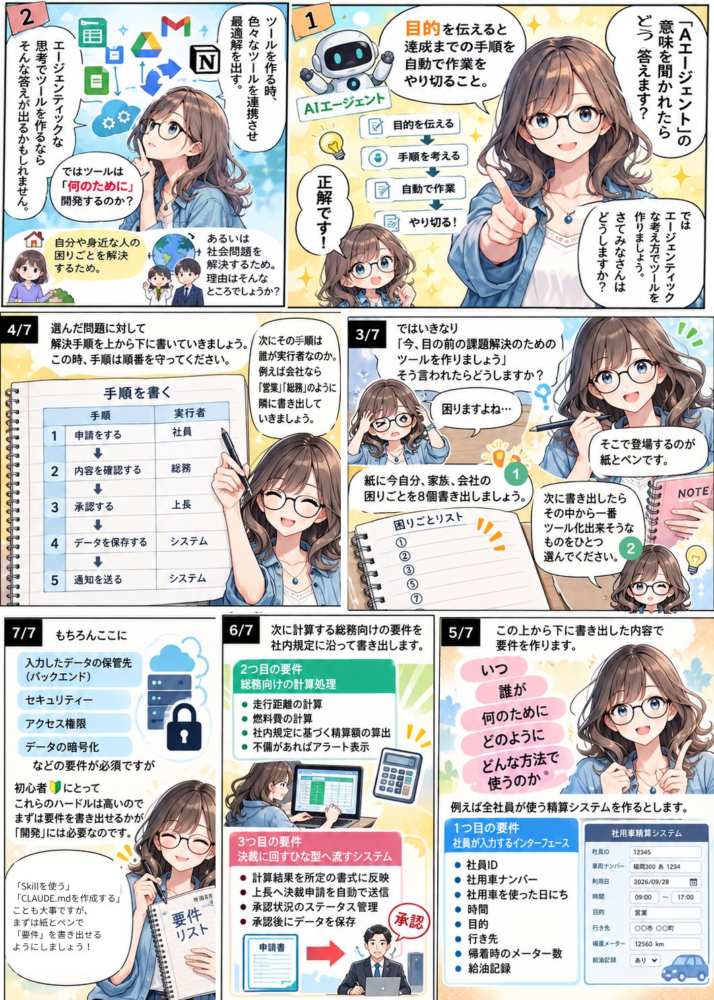

今日やること
前半30分はパソコンを開かずに、紙とペンで「何を作るか」を決めます。後半は、研修のアンケートと議事録を Claude Code に読ませて、次の仕事でそのまま使えるまとめ（コンテキスト資料）を作るコマンド /context を作ります。
このページのプロンプトは、右上の「コピー」ボタンでそのまま Claude Code に貼り付けられます。先に進める方は、どんどん進めてください。各ステップの「できた」にチェックを入れると、上の目次に印がつきます。
資料の中身はどこへ行く？
作った道具とまとめは自分のパソコンに残り、Web には公開しません。ただし、AI が資料を読むときは、中身が AI のサービス（Anthropic 社）へ送られて処理されます。社外秘のものは入れないでください。
タイムライン
| 時間 | 内容 |
|---|---|
| 14:00 | ごあいさつ・講師紹介（CDLE熊本） |
| 14:05 | 【前半・紙】使えるツールを作るには（漫画に沿って） |
| 14:35 | 休憩 |
| 14:40 | 今日の題材とデモ |
| 14:48 | 教材をダウンロードして Claude Code を起動 |
| 14:53 | ステップA 任せる範囲を決める |
| 15:00 | ステップB 紙の要件を手順書に写す |
| 15:15 | ステップC 動かして、確認して、保存する |
| 15:25 | ステップD 使い回す／育てる |
| 15:33 | 発展：自分の課題のコマンドを作る |
| 15:43 | 持ち帰り方と、公開しない約束／発表 |
| 15:50 | まとめ |
| 15:55 | まとめ・次回のご案内（CDLE熊本） |
講師紹介

参加前の準備（当日までに）
当日は、インストールやご契約の時間はとっていません。次の4つを済ませてからご参加ください。
動作確認のしかた
| ターミナル版 | デスクトップアプリ版 | |
|---|---|---|
| 1 | claude --version と入力し、バージョンが出る | アプリを開き、上の「Code」タブを開く |
| 2 | claude と入力し、ブラウザでログインする | 「Select folder」でフォルダを1つ選ぶ |
| 3 | /model で Opus 5.5 を確認（Esc で閉じる） | 送信ボタン横のモデルが Opus 5.5 か確認 |
| 4 | 「こんにちは」と送って返事が来ればOK | 「こんにちは」と送って返事が来ればOK |
Pro プランは、チャットと Claude Code で使用量の上限を共有しています。当日はチャットでの大量のご利用を控えてください。
使えるツールを作るには（紙とペン）
パソコンは閉じたままで大丈夫です
漫画を1枚ずつ見ながら、同じことを手元のワークシートに書いていきます（ワークシートと筆記用具は会場でお配りします）。

| 時間 | ワークシート | 書くこと |
|---|---|---|
| 14:05 | ― | AIエージェントってなに？（目的を伝える → 手順を考える → 自動で作業 → やり切る） |
| 14:10 | ― | ツールは「何のために」作るのか |
| 14:15 | ①② | 困りごとを8個書き出し、いちばんツールにできそうなもの1つに ○ |
| 14:21 | ③ | 手順を上から下へ書き、隣に「実行者」を書く |
| 14:28 | ④⑤ | 要件（いつ・誰が・何のために・どのように・どんな方法で）、やってはいけないこと |
ここが今日いちばん大事です
「実行者」がシステムの行は、エージェントに任せるところ。人の行は、あとで「人が確認するところ」になります。後半は、この紙をそのまま手順書に写します。
アンケートと議事録を「使えるまとめ」に変える
まずは講師が完成形を動かします（14:40〜14:48）。方針を3行で話す／資料にないことは【要確認】と書く／個人名・電話番号を消す／件数を自分でチェックする／「保存してよいですか？」と聞いて止まるの5つに注目してください。
研修のあと、アンケートのCSVと走り書きの議事録が別々に置かれたまま。次の企画のたびに両方を読み直したり、AI に毎回生データを貼り付けたりしていませんか。そこで1回だけきちんとまとめて、次からはそれを使うようにします。
| いままで | 今日つくる形 | |
|---|---|---|
| AIに渡すもの | 生のアンケート＋議事録を毎回 | 整えたまとめ1枚 |
| 個人情報 | 毎回そのまま流れる | まとめる時点で取りのぞく |
| 結果 | 聞くたびに違う答え | 同じ土台なので、ぶれにくい |
| 次の人 | また最初から読む | まとめを読めば追いつける |
教材をダウンロードして Claude Code を起動
14:48〜14:53- 教材のZIPをダウンロードする（このページのいちばん上のボタンと同じです）
Minutes-main.zipを展開する（デスクトップなど、わかる場所に）- 展開してできた
Minutes-mainフォルダで Claude Code を起動する
ターミナル版の起動
Windows：エクスプローラーで Minutes-main フォルダを開き、何もないところを右クリック →「ターミナルで開く」。
Mac：ターミナルを開き、cd （cd と半角スペース）と入力してから Minutes-main フォルダをターミナルにドラッグし、Enter。
開いたら、次の1行を入力します。
claude
デスクトップアプリ版の起動
Claude デスクトップアプリの「Code」タブを開き、「Select folder」で Minutes-main フォルダを選びます。ここから先のプロンプトは、ターミナル版と同じです。
起動できたら、まず中身を見てもらいましょう。
input フォルダのファイルを2つとも読んで、どんな資料か3行で教えてください。
フォルダの中身
| ファイル | 中身 | 使うところ |
|---|---|---|
input/anket-2026-09-13.csv | 練習用のアンケート（架空） | 全体 |
input/gijiroku-2026-09-20.txt | 練習用の議事録メモ（架空） | 全体 |
CLAUDE_追記ルール.md | CLAUDE.md に書くルール | A |
gitignore_追記.txt | .gitignore に書く行 | A |
context.md | 手順書（/context の中身） | B |
context/_テンプレート.md | まとめの型 | C |
完成版/ | うまくいかなかったときの完成形と出力例 | 困ったとき |
アンケートには、わざと個人名と電話番号が1件だけ入っています。議事録には決まったこととまだ決まっていないことが混ざっています。エージェントが見分けられるかを、あとで確かめます。
任せる範囲を決める
14:53〜15:00紙のワークで「人がやること」と「システムがやること」を分けました。その境界を、Claude Code が毎回読むルール（CLAUDE.md）にします。
CLAUDE_追記ルール.md の内容で、このフォルダに CLAUDE.md を作ってください。すでに CLAUDE.md がある場合は、最後に追記してください。
gitignore_追記.txt の内容で、このフォルダに .gitignore を作ってください。すでにある場合は、最後に追記してください。
ファイルを作ってよいか聞かれたら、内容を見て許可します。
CLAUDE.md に入るルールを見る
## このプロジェクトの目的（11月回） アンケートや議事録などの「生の資料」を、次の仕事でくり返し使える**コンテキスト資料**に変えて、手元にためていくためのプロジェクトです。 ## フォルダの役割 - `input/` … もとの資料（アンケート・議事録）。**書き換えない** - `context/` … まとめたコンテキスト資料。ここだけが成果物 - `.claude/commands/` … 手順書（スラッシュコマンド） ## 境界ルール（やってはいけないこと） - `input/` の元ファイルを書き換えない - `/context` の実行中は、`input/` と `context/` 以外のファイルを書き換えない（ルールや手順書を変えるのは、人が頼んだときだけ） - メール送信・外部サービスへの投稿など、外に送る操作はしない - 資料にない数字・意見を推測で作らない。わからないことは「【要確認】」と書く - まとめには個人名・電話番号・メールアドレスを残さない（Aさん・Bさんに置きかえる） - 保存・確定の前には、必ず人間に確認する ## 公開についての約束 - このプロジェクトは **Web に公開しない**（Vercel などにデプロイしない） - `input/` と `context/` は本物の個人情報が入りうるため、Git の記録に含めない（`.gitignore` で除外する） - 共有するのは「手順書」と「テンプレート」だけ。中身は各自の手元に置く ## 話し方 - 受講者はプログラミング初心者。専門用語は最小限にして、日本語でわかりやすく説明する - コードを書く前に、実装方針を3行で説明する
なぜ .gitignore に入れるの？
input/ と context/ には、本物のアンケートや議事録を入れることになります。GitHub に上げると、公開リポジトリなら誰でも見られる状態になります。.gitignore に書いておけば、共有されるのは「手順書」と「テンプレート」だけ。前回やった「Vercel のプロジェクトを削除する手順」と同じ考え方で、公開しない／公開してしまったら止めるをセットで覚えてください。
紙の要件を手順書に写す
15:00〜15:15.claude/commands/ フォルダに置いたファイルは、スラッシュコマンド（/ファイル名）として呼び出せます。前半に紙へ書いた「手順」と「実行者」が、そのまま手順書の中身になります。
| 紙に書いたもの | 手順書のどこになるか |
|---|---|
| 手順を上から下へ | 「## 手順」の 1・2・3… |
| 実行者が「システム」の行 | エージェントにやらせる指示 |
| 実行者が「人」の行 | 「7. 人に確認する」 |
| 要件の「どのように」 | 出力の形（テンプレート） |
| やってはいけないこと | 「## やってはいけないこと」 |
context.md の内容を、そのまま .claude/commands/context.md としてコピーしてください。中身は変えないでください。
手順書（context.md）の中身を見る
--- description: アンケートと議事録を読み、次に使えるコンテキスト資料にまとめて、人に確認してから保存する argument-hint: [まとめたい資料のパス（省略すると input フォルダの新しい2件）] --- あなたは、研修やイベントのふりかえりを担当するアシスタントです。 以下の手順を、上から順番に、1つずつ実行してください。 ## 手順 ### 1. 資料を読む（認識） - 読むファイル: $ARGUMENTS - 何も指定されていなければ、`input/` フォルダの中で新しい順に2件（アンケートと議事録）を読む。 - 読んだファイル名を最初に1行で伝える。 ### 2. 方針を3行で伝える（考える余白） - いきなりまとめを書かない。 - 「どんな資料か」「足りない情報は何か」「どうまとめるか」を3行で先に書く。 ### 3. 事実と意見を分ける（推論） - 数えられるもの（回答数・満足度・件数）は、実際に数える。推測で数字を作らない。 - 自由記述は、似た意見をまとめて「何件あったか」を添える。 - 議事録からは「決まったこと」と「まだ決まっていないこと」を分けて拾う。 - 資料に書かれていないことは書かない。判断できないものは「【要確認】」と書く。 ### 4. 個人情報を取りのぞく（境界） - 個人名は「Aさん」「Bさん」に置きかえる。 - 電話番号・メールアドレス・住所は残さず削除する。 - 個人が特定できそうな書き方（一人しかいない所属＋役職など）は、ぼかして書く。 ### 5. テンプレートに流し込む（行動の準備） - `context/_テンプレート.md` の見出しをそのまま使ってまとめる。 - 各項目は、あとで読む人がそれだけ読めばわかるように書く。 ### 6. 自分でチェックする（内省） 下書きを、次のチェック項目で自己採点する。結果は ✅ / ⚠️ で一覧にする。 - [ ] 件数の合計が、もとの回答数と合っているか - [ ] 個人名・電話番号・メールアドレスが残っていないか - [ ] 資料にない情報を推測で書いていないか - [ ] 「決まったこと」と「未決」が混ざっていないか - [ ] 次のアクションに「誰が・いつまでに」が入っているか - [ ] テンプレートの見出しがすべて埋まっているか（埋められない所は【要確認】） ⚠️ があれば、直せるものは直す。直せないものは、人間への質問にする。 ### 7. 人に確認する（Human-in-the-Loop） - 完成した下書きとチェック結果を見せる。 - 最後に必ず次のように聞いて、返事を待つ。 「この内容で保存してよいですか？ 直したいところがあれば教えてください。」 - 人間が OK と言うまで、ファイルを保存しない。 ### 8. 保存する（行動） - OK が出たら `context/日付-タイトル.md`（例: `context/2026-09-13-研修ふりかえり.md`）に保存する。 - 保存したファイル名を伝えて終了する。 ## やってはいけないこと - `input/` の元の資料を書き換えること - メール送信・チャット投稿など、外部に送ること - 資料にない数字や意見を作ること - 個人名・連絡先をまとめに残すこと - 人間の OK なしに保存すること
確認しましょう
入力欄に / と打つと、候補に context が出てきます。出てこないときは、ターミナル版は /exit で終了してもう一度 claude、デスクトップ版は新しいセッションを開き直してください。
動かして、確認して、保存する
15:15〜15:25/context
動き出したら、次の5つを画面で確かめましょう。
- ① 方針まとめを書く前に、方針が3行で出てくる
- ② 事実と意見「満足度の平均」「同じ意見が何件」など、数えた結果が書かれている
- ③ 個人情報アンケートにあった名前と電話番号が、まとめには残っていない
- ④ 【要確認】「会場の空き確認」「個別相談の対応」が、未決や【要確認】に入っている
- ⑤ 確認「保存してよいですか？」と聞いて、止まって待っている
質問されたら、人として答えて OK を出します。
個別相談の対応は「次回の休憩時間に相談枠を作る」で確定です。会場の空き確認は未決のままで大丈夫です。 この内容で保存してください。
ファイル書き込みの許可を求められたら、内容を確認して許可します。context フォルダにまとめができていれば完成です。
答え合わせ
完成版/出力例_2026-09-13-研修ふりかえり.md と見比べてみましょう。言い回しが違っていても、数字（12件・平均4.1・回収率60%）、決まったこと、未決が合っていれば大丈夫です。
まとめの型（context/_テンプレート.md）を見る
# （タイトル：いつ・何の記録か） ## 1. 概要 - 対象： - 日付： - もとにした資料： ## 2. 数字でわかること - ## 3. よかった点（多い順・件数つき） - ## 4. 改善してほしい点（多い順・件数つき） - ## 5. 決まったこと - ## 6. 未決・【要確認】 - ## 7. 次のアクション（何を・誰が・いつまでに） - ## 8. 引用元 -
使い回す／育てる
15:25〜15:33ここからが「再利用」です。できたまとめを渡して、次の仕事をしてもらいます。生のアンケートはもう渡しません。
context フォルダのまとめをもとに、次回研修の案内文を書いてください。 まとめに書かれていない情報は足さないでください。
ほかの使い方を試す
context フォルダのまとめをもとに、次回研修の企画書のたたき台を作ってください。 まとめに書かれていない情報は【要確認】としてください。
context フォルダのまとめをもとに、前回からの改善点を上長への報告用に3行でまとめてください。
context フォルダのまとめをもとに、次回のアンケートの設問を見直す案を出してください。
チェック項目を1つ足して育てる
使ってみて「ここも見てほしい」と思ったことを、手順書に1行足します。これがエージェントを育てるということです。
.claude/commands/context.md の「6. 自分でチェックする」に、次のチェック項目を追加してください。 - [ ] 回収率（回答数 ÷ 配布数）が書かれているか
もう一度 /context を動かして、チェック結果が増えていることを確かめましょう。
発展：自分の課題のコマンドを作る
15:33〜15:43前半の紙のワークで ○ をつけた、自分の課題で作ってみましょう。遅れている方は、この時間でステップCまで進めれば大丈夫です。
ワークシートを見ながら、（ ）の中だけ書きかえて送ります。
.claude/commands/context.md を参考にして、新しい手順書 .claude/commands/（コマンドの名前）.md を作ってください。 ・何をするコマンドか：（例：経費メモから勘定科目の候補を出す） ・手順（紙に書いた順番）：（1. ○○を読む 2. ○○する 3. ○○する） ・人に確認してほしいところ：（例：保存する前） ・チェック項目：（例：金額の合計が合っているか） ・やってはいけないこと：（例：元のファイルを書き換えない） いきなり完成させず、方針を3行で伝えるところと、保存の前に人に確認するところは必ず入れてください。
アイデア例：経費メモ → 勘定科目の候補／会議メモ → 議事録と ToDo 一覧／シフト未提出の人へのやさしいリマインド文
持ち帰り方と、公開しない約束
- フォルダごと、いつも使う場所（ドキュメントなど）に移動します。
- 次に使うときは、そのフォルダで Claude Code を起動して
/contextと打つだけです。 - 自分の GitHub に置くと、チームでも同じコマンドが使えます。ただし
input/とcontext/は.gitignoreで外したままにしてください。
大事な話
今日のツールは Web に公開しません。9月に作った Web アプリを公開したままの方は、顧客名や社内情報が入っていないか確認し、入っていたら前回の手順でプロジェクトを削除してください。
本物の資料を扱うときは、「公開しない」「共有するのは手順書だけ」に加えて、「社外秘のものは AI に入れない」を守ってください。
今日の持ち帰り
- 紙に書ければ、作れる。困りごと → 手順 → 実行者 → 要件。ここまで紙で書ければ、あとは AI に渡すだけ。
- 1回整えたものを、使い回す。速くて、ぶれなくて、安全。
- 公開しない・人が確認する。最後は人が OK を出す。
こまったときは
| こんなとき | こうする |
|---|---|
| /context が候補に出ない | ターミナル版は /exit → claude で起動し直す。デスクトップ版は新しいセッションを開く。Minutes-main フォルダで起動しているかも確認 |
| 確認せずに保存しようとした | 許可を求められたら「いいえ」。止めたいときは Esc キー。そのあと「手順書の7番を必ず守って」と伝える |
| 数字が合わない・資料にないことが入っている | 「件数をもう一度数え直してください」「資料にないことは入れないでください」と伝える |
| エラーが出た | エラーの全文を貼り付けて「原因を1つに絞って修正してください」と頼む |
| 途中のステップで遅れた | 完成版/ フォルダの中身をそれぞれの場所にコピーして追いつく（下のプロンプト） |
| デスクトップ版でスラッシュコマンドが使えない | context.md の中身を貼り付けて「この手順で input フォルダの資料をまとめてください」と頼む |
完成版/README.md を読んで、そこに書かれているとおりに、完成版のファイルをそれぞれの場所にコピーしてください。出力例はコピーしなくて大丈夫です。
チートシート
| やりたいこと | 操作 |
|---|---|
| Claude Code を起動 | フォルダでターミナルを開いて claude |
| まとめを作る | /context |
| 資料を指定して作る | /context input/ファイル名 |
| 途中で止める | Esc キー |
| 終了する | /exit |
| まとめを使う | 「context フォルダのまとめをもとに、〇〇を書いてください」 |